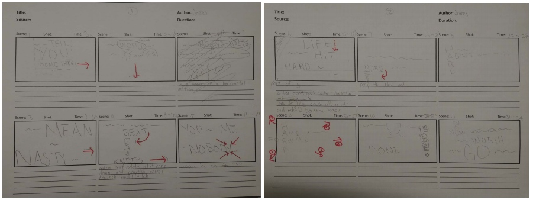
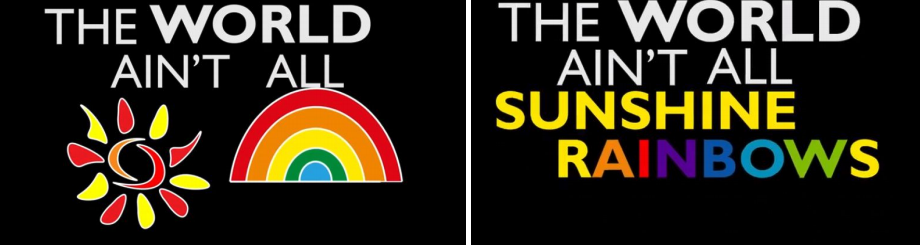

technologies i have worked with (skill showing section)
narrative, story to differentiate from other people. why did i do this.
motivational
Kinetic Typography
Objective
Create kinetic typography with audio and I chose part of a speech from the film Rocky Balboa (2006).
I chose this audio because it was emotional, fast and inspirational. To do this project, it required
Adobe software After Effects and use of storyboard.
Process
Unexpected strategy but I listened to the audio more than 10 times and after that, I was able to
visualize certain part of the scenes because of the changes in tones and images created in my mind
of how I want the texts to appear. On my storyboard, I did a quick sketch of what I visualized

After finishing with the rough sketches on the storyboard, I started to put words on the After
Effects software and proceed. I made a lot of adjustments on the layout/transition and how I want to
put the words. This work was my first time working with After Effects so initially I struggled but I
found myself learning a lot through the project and it seemed much easier as I started to feel more
comfortable.
Challenges
The first challenge I faced was not understanding what kinetic typography was. Kinetic typography
should be focused on the movement of the typography not illustrations but I had a lot of
illustrations that replaces words as it was my initial visualization for me when I heard the audio.
I overcome that challenge by replacing illustrations with words that resemble similar connotations.

Since speeches were motivational, a lot of images were created in my head while listening. I wanted
to show that in the project but struggled to do so. I decided that taking verbs such as “fast”,
“hard”, “forward” and using that as my animations solve the problem.